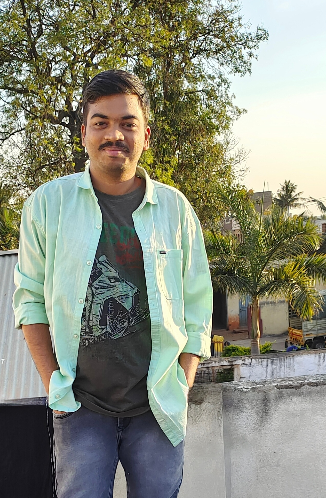
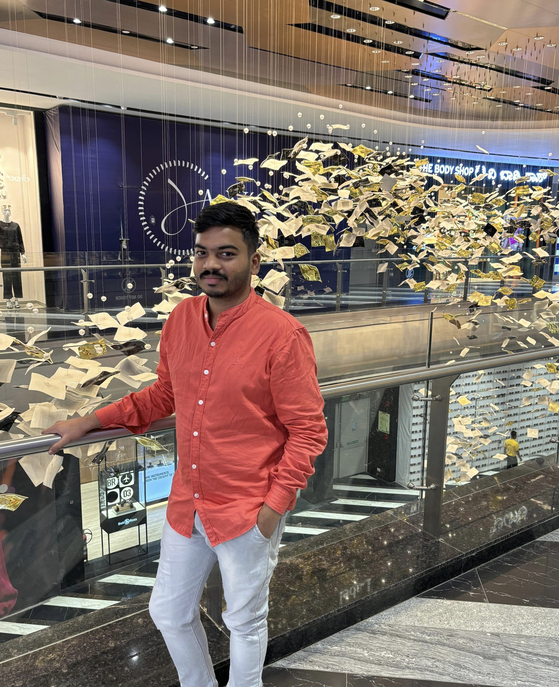

|| SHRI SANGAMESHWARA PRASANNA ||
|| SHRI VIJAYAMAHANTESWARA PRASANNA ||
Personal Details
- Name: Vijay S Hiremath
- Date of Birth: 29th May 1998, 1:45 p.m. Friday, Hubballi
- Height: 5'5''
- Caste: VeeraShaiva Jangama
- Mane Devaru: Kudala Sangama
- Bagi: Ramagiri Bagi
- Peetha: Kedhara Peetha
- Rashi: Karkataka
- Nakshatra: Punarvasu
- Education: BE (CS)
- Job: Software Engineer, Circana India Pvt Ltd, Bengaluru
- Current Location: Rajajinagara, Bengaluru
- Hobbies: Reading, Travelling, Music
Property/Asset
- 6 Acres of Agricultural Land (Nerabenchi, Muddebehala Taluk, Vijayapura District)
- Plot in Ilkal, Bagalkote District
Family Details
- Father: Shivalingayya M Hiremath, now Retired, worked in Private Sector company
- Mother: Rajeshwari S Hiremath, Teacher at KLE Banyan, Rajajinagara
- Sibling: Vinay S Hiremath, styding BSc. Agri, UAS Dharwad
|| ಶ್ರೀ ಸಂಗಮೇಶ್ವರ ಪ್ರಸನ್ನ ||
|| ಶ್ರೀ ವಿಜಯಮಹಂತೇಶ್ವರ ಪ್ರಸನ್ನ ||
ವೈಯಕ್ತಿಕ ಮಾಹಿತಿ
- ಹೆಸರು: ವಿಜಯ್ ಎಸ್ ಹಿರೇಮಠ
- ಜನ್ಮ ದಿನಾಂಕ: 29-05-1998, 1:45 p.m. ಶುಕ್ರವಾರ, ಹುಬ್ಬಳ್ಳಿಯಲ್ಲಿ
- ಎತ್ತರ: 5'5''
- ಜಾತಿ: ವೀರಶೈವ ಜಂಗಮ
- ಮನೆ ದೇವರು: ಕೂಡಲ ಸಂಗಮ
- ಬಗಿ: ರಾಮಗಿರಿ ಬಗಿ
- ಪೀಠ: ಕೇದಾರ ಪೀಠ
- ರಾಶಿ: ಕರ್ಕಾಟಕ
- ನಕ್ಷತ್ರ: ಪುನರ್ವಸು
- ಶಿಕ್ಷಣ: ಬಿಇ (ಸಿಎಸ್)
- ಉದ್ಯೋಗ: ಸಾಫ್ಟ್ವೇರ್ ಎಂಜಿನಿಯರ್, ಸಿರ್ಕಾನಾ ಇಂಡಿಯಾ ಪ್ರೈವೇಟ್ ಲಿಮಿಟೆಡ್, ಬೆಂಗಳೂರು
- ವಿಳಾಸ: ರಾಜಾಜಿನಗರ, ಬೆಂಗಳೂರು
- ಹವ್ಯಾಸ: ಓದು, ಪ್ರವಾಸ, ಸಂಗೀತ
ಆಸ್ತಿ / ಜಮೀನು
- ಆರು ಎಕರೆ ಕೃಷಿ ಭೂಮಿ (ನೆರಬೆಂಚಿ, ಮುದ್ದೇಬಿಹಾಳ ತಾ, ವಿಜಯಪುರ ಜಿಲ್ಲೆ)
- ಬಾಗಲಕೋಟೆ ಜಿಲ್ಲೆಯ ಇಳಕಲ್ ನಲ್ಲಿ ಪ್ಲಾಟ್
ಕುಟುಂಬ ಮಾಹಿತಿ
- ತಂದೆ: ಶಿವಲಿಂಗಯ್ಯ ಎಂ ಹಿರೇಮಠ, ನಿವೃತ್ತ, ಖಾಸಗಿ ವಲಯದಲ್ಲಿ ಕೆಲಸ ಮಾಡುತ್ತಿದ್ದರು
- ತಾಯಿ: ರಾಜೇಶ್ವರಿ ಎಸ್ ಹಿರೇಮಠ, ಶಿಕ್ಷಕರು (ಕೆಎಲ್ಇ ಭ್ಯನ್ಯನ್, ರಾಜಾಜಿನಗರ)
- ಸಹೋದರ: ವಿನಯ್ ಎಸ್ ಹಿರೇಮಠ, ಬಿಎಸ್ಸಿ ಅಗ್ರಿ ಓದುತ್ತಿದ್ದರೆ, ಯುಎಎಸ್ ಧಾರವಾಡ
Contact Details
- Father's Phone No.: 9731440589
- My Phone No.: 7795885523
- Email: vijayhiremathsh@gmail.com
Photos



Instagram:
Vijay Hiremath